Як комп'ютер читає ноти, намальовані на старих картинах, і знаходить твір у великих нотних базах. Що вже працює, що ми знайшли нового і де метод зупиняється.
Для доповіді на конференції AEC, Гамбург, листопад 2026Підготовлено Claude (Anthropic) для Євгена СанніковаЧастину кейсів вів Codex
Коротко
На багатьох картинах XVI–XVIII століть намальовано ноти. Часто їх можна прочитати, але музейні описи твору не називають.
Ми читаємо висоти нот на картині, перетворюємо їх на числа і порівнюємо з кожним місцем кожного голосу у двох відкритих базах: 483 662 голоси (46,3 млн нот) і 2 048 200 початків творів. Пошук займає від кількох секунд до кількох хвилин на ноутбуці.
Ноти читає мала нейромережа, навчена лише на штучних картинках, які ми малюємо самі. Жодної розмітки з картин у навчанні немає.
На трьох картинах із відомою відповіддю пошук ставить правильний твір першим. На всіх трьох це вдається і з читанням, яке зробила сама модель.
Дві нові знахідки там, де твір ніхто не назвав: арія Ґрауна на анонімній картині і застільна пісня в книзі на картині Ла Іра. В обох слова підказали твір, а ноти це незалежно перевірили.
Картина
Що було відомо
Що зробили ми
Статус
Віже-Лебрен, «Баронеса де Крюссоль», 1785 (Тулуза)
Назва гімну написана на аркуші
Ноти без назви: Ґлюк перший серед 2 млн початків; модель читає сама
контроль
Караваджо, «Відпочинок на шляху до Єгипту», бл. 1597 (Рим, Доріа-Памфілі)
Слова → застільна пісня Мульньє 1633; намальована музика інша, справжня двоголоса
нове: слова
Аппіані, портрет музиканта, бл. 1800 (Клівленд)
Музей: ноти читаються, твір не встановлено
Модель: 10 голівок приблизно з 16; не знайдено; передано Codex
відкрито
Гондекутер, «Пташиний концерт», 1670
Не встановлено
Не знайдено
ні
Гейсбрехтс, обманка зі скрипкою, 1672 (Копенгаген)
Не встановлено
Ноти намальовано штрихами без голівок
ні
Як це працює
Шість кроків від знімка картини до назви твору. Приклади взято з картини Ла Іра (Метрополітен-музей), де ноти добре видно.
Знімок
Беремо лише музейні знімки у відкритому доступі в повній роздільності. Збільшуємо звичайною інтерполяцією. Генеративне «покращення» заборонене: на картині Ван Утрехта ми перевірили, що воно перемальовує ноти.
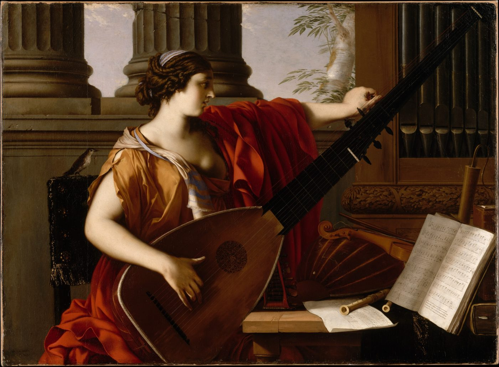
Лоран де Ла Ір, «Алегорія музики», 1649. Метрополітен-музей, 50.189. Знімок 3805 × 2804 точок; нотна книга праворуч унизу.
Рядок нотного стану
Вирізаємо кожен рядок, повертаємо його і знаходимо п'ять лінійок. Потім рядок «розпрямляємо»: верхня лінійка лягає на висоту 8, нижня на 0. Один щабель дорівнює половині відстані між лінійками: нота на лінійці має парну висоту, нота між лінійками — непарну. Висоту записуємо як виміряли, наприклад 6,4, без округлення.
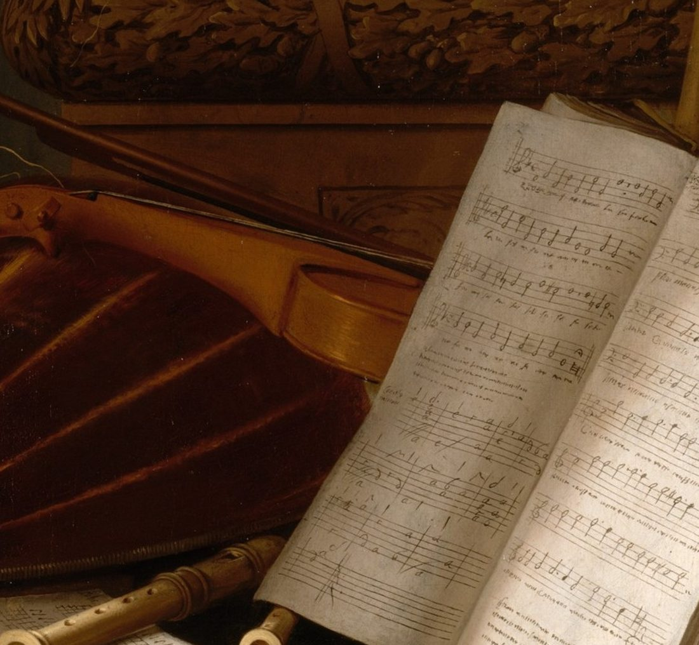
Книга на картині, збільшено вдвічі. Ліва сторінка: вправа і табулатура для лютні. Права: пісня на два голоси, вісім рядків.
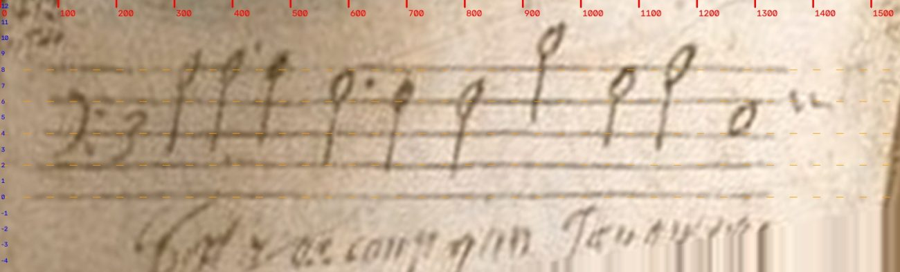
Перший рядок правої сторінки після розпрямлення. Пунктир — розрахункові лінійки; ліворуч підписано висоти від −4 до 12. Між лінійками на знімку 8–10 точок.
Знаки
Спочатку ми позначали голівки нот вручну, за збільшеними вирізками з мірними шкалами. З 13 жовтня це робить нейромережа. Готових розмічених картин із нотами немає, тому ми навчаємо її на штучних рядках, які малює наша програма:
мелодії справжні: 150 000 уривків із нотної бази, без творів, на яких ми перевіряємо метод;
вигляд старий: ромбічні й овальні голівки, похилі штилі, ключі, крапки, знаки альтерації, слова під рядком, а для XVIII століття ребра, паузи і форшлаги;
рядок псуємо так, як його псує картина: лінійки від руки, розірвані контури голівок, тріщини, зерно полотна, малий оригінал, збільшений згодом (5–14 точок між лінійками);
програма сама знає, де який знак, тому мітки точні.
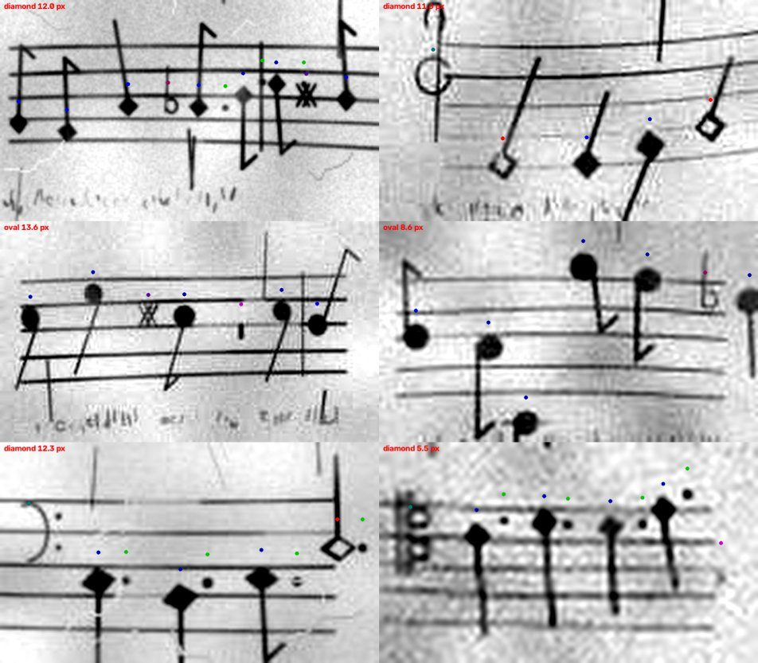
Штучні рядки в нотації XVI–XVII століть. Кольорові крапки над нотами — мітки, які знає програма.
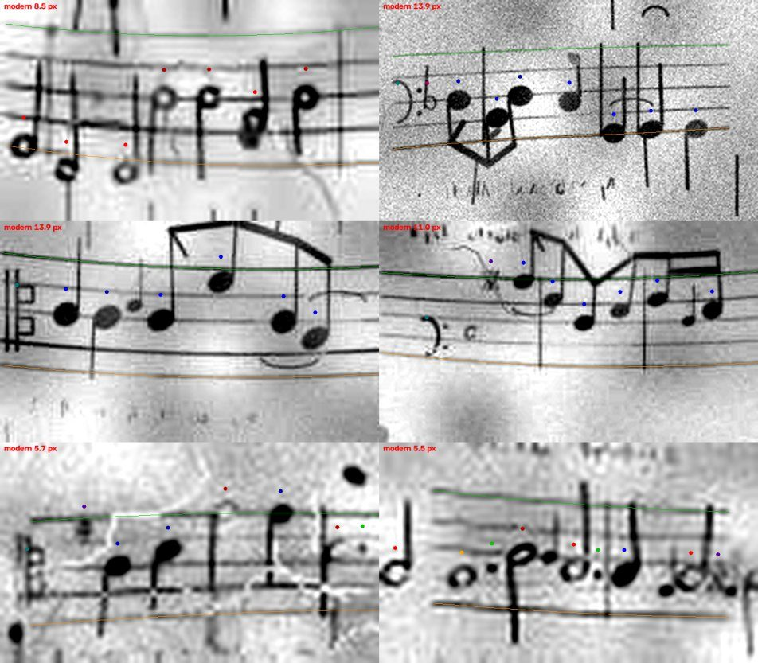
Те саме для нотації XVIII століття. Зелена і помаранчева лінії — верхня й нижня лінійки, які модель теж вчиться знаходити.
Модель — мала згорткова мережа (1,3 млн параметрів). Для кожного з 12 типів знаків вона видає карту, де пік означає знак у цьому місці, і ще дві карти для верхньої й нижньої лінійки. Типи: ціла нота, порожня зі штилем угору або вниз, зафарбована зі штилем угору або вниз, квадратна, крапка, пауза, ключ, кустос, бемоль, дієз. Навчання триває 10–22 хвилини на ноутбуці.
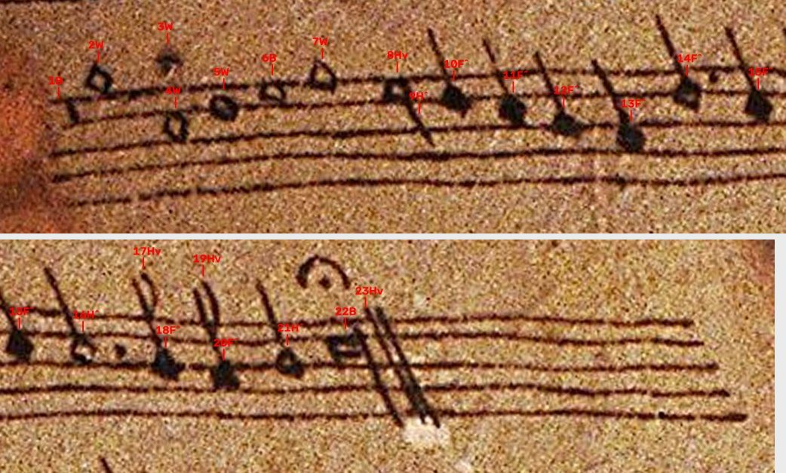
Відповіді моделі на четвертому рядку Караваджо, звірені оком. W — ціла нота, H — порожня зі штилем, F — зафарбована, B — квадратна; стрілка показує напрям штиля. З 17 нот рядка модель знайшла всі, тип правильний у 15; ще 6 відповідей зайві (кінці штилів, шматок ключа, пляма).
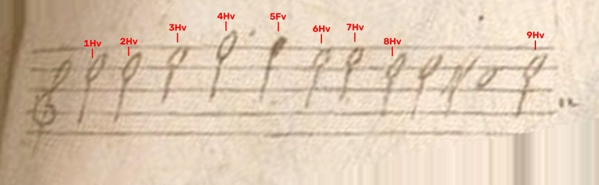
Сьомий рядок Ла Іра: 9 нот з 11 знайдено, усі з правильним типом, зайвих немає.
Числа
Кожна нота стає парою чисел: висота в щаблях і, за формою, відносна тривалість (ціла 4, порожня 2, зафарбована 1, крапка додає половину). Ключа ми не знаємо, тому порівнюємо лише відстані між нотами. З тривалостей так само беремо лише відношення сусідніх нот.
Пошук
Дві бази. PDMX — відкрита збірка нот із MuseScore: 483 662 голоси, 46,3 млн нот; до неї ми додали чотири голоси мотету з Караваджо, бо його там не було. RISM — міжнародний каталог музичних джерел: 2 048 200 початків творів із 1,59 млн записів, здебільшого рукописи 1600–1850 років.
Читання з картини ніколи не буває чистим: є пропущені ноти, зайві знаки й похибки висоти. Тому пошук терпить помилки і йде в три етапи:
Кожні 6 сусідніх нот рядка пробують у кожному місці кожного голосу. Де вони лягають, вони «голосують» за місце, з якого міг би починатися рядок.
Найкращі 40 000 місць перевіряємо всім рядком за формулою нижче.
Для сторінки рядки мають іти один за одним у тому самому голосі.
оцінка позначки = 1 − (d / τ)², якщо поруч є нота (d — різниця висот у щаблях після спільного зсуву) позначка без ноти: −1,0 · нота без позначки: −0,6 · оцінка рядка = сума / кількість позначок (1,0 = ідеально) τ = 0,6 щабля для чітких знімків, 1,0 для дрібних · ритм: +0,5 за кожну пару сусідніх нот зі збіжним відношенням тривалостей; незбіг нічого не коштує
Для RISM ті самі правила застосовуємо до перших 20 нот кожного твору: картина часто показує саме початок.
Перевірка
План і пороги успіху записуємо до того, як читати ноти.
Читання фіксуємо з контрольною сумою SHA-256 до будь-якого пошуку і після цього не змінюємо.
Контроль: ті самі ноти в перемішаному порядку. Якщо перемішані дають той самий результат, збіг випадковий.
Усе, що зроблено після того, як ми побачили відповідь, позначаємо окремо.
Числа і швидкість
Усе пораховано на ноутбуці MacBook Pro з процесором Apple M3 Pro, без серверів.
483 662голоси в базі PDMX, 46,3 млн нот
2 048 200початків творів у каталозі RISM
3,5–5,9 спорівняти один рядок із 35,4 млн місць
2,5–4 хвзнайти цілу сторінку з допуском на помилки
10–22 хвнавчити модель знаків на ноутбуці
×130менше випадкових збігів, якщо додати ритм (8 нот)
Що вимірювали
Результат
Що це означає
Модель знаків, Караваджо (тип ноти відомий з видання)
84 з 94 знайдено; тип правильний у 74
Модель бачила лише штучні рядки
Модель знаків, Ван Утрехт (6 точок між лінійками)
83 з 87 знайдено; тип 97 зі 113
Тип ноти видно навіть на дуже дрібному знімку
Модель знаків, Ла Ір (тип записаний оком)
62–72 з 84; тип 56–66
Бліді порожні голівки модель іноді пропускає
Лінійки від моделі проти лінійок, виміряних оком
здебільшого до 0,3 щабля
На лівому краї рядка до 1 щабля
Ритм у пошуку, Караваджо, 8 нот
1 431 → 11 місць
Правильне місце лишається
Ритм у пошуку, Ла Ір, вісім рядків
8 113 → 43 місця
Але дві помилки у формах із дев'яти викидають правильну відповідь, тому ритм додаємо м'яко
Пошук серед 2 млн початків
≈ 1–1,5 хв
Один рядок, з допуском на помилки
Відомі відповіді
Тут твір уже встановили люди. Ці картини перевіряють, чи метод знаходить правильну відповідь сам.
Віже-Лебрен, «Баронеса де Крюссоль», 1785
контроль
Музей августинців, Тулуза. На аркуші написано «Hymne d'Echo et Narcisse». Ми прочитали ноти вокального рядка, не дивлячись на напис, і шукали в каталозі початків.
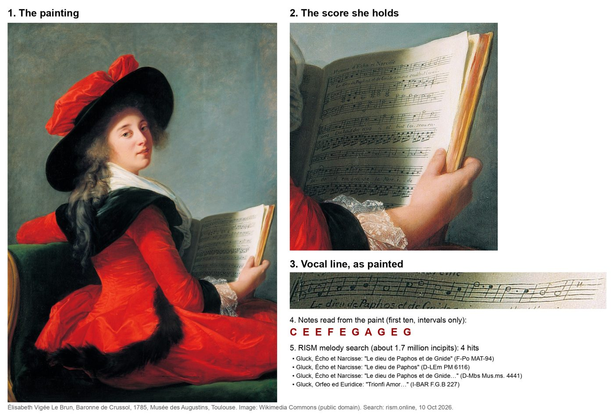
Картина, аркуш і той самий початок мелодії в каталозі RISM.
Читання оком (перші 10 нот): у каталозі збігаються лише записи Ґлюка: гімн «Le dieu de Paphos» і хор «Trionfi Amor» з «Орфея», що має той самий початок.
Читання моделлю (лінійки і ноти без людини): Ґлюк перший серед 2 048 200 початків, 0,64 проти 0,57 у наступного твору.
Караваджо, «Відпочинок на шляху до Єгипту»
контроль
Галерея Доріа-Памфілі, Рим. Янгол грає з нотного зошита; музикознавці давно встановили верхній голос мотету Ноеля Баулдевейна «Quam pulchra es». Мотету немає в PDMX, тому ми додали його чотири голоси з відкритого видання.
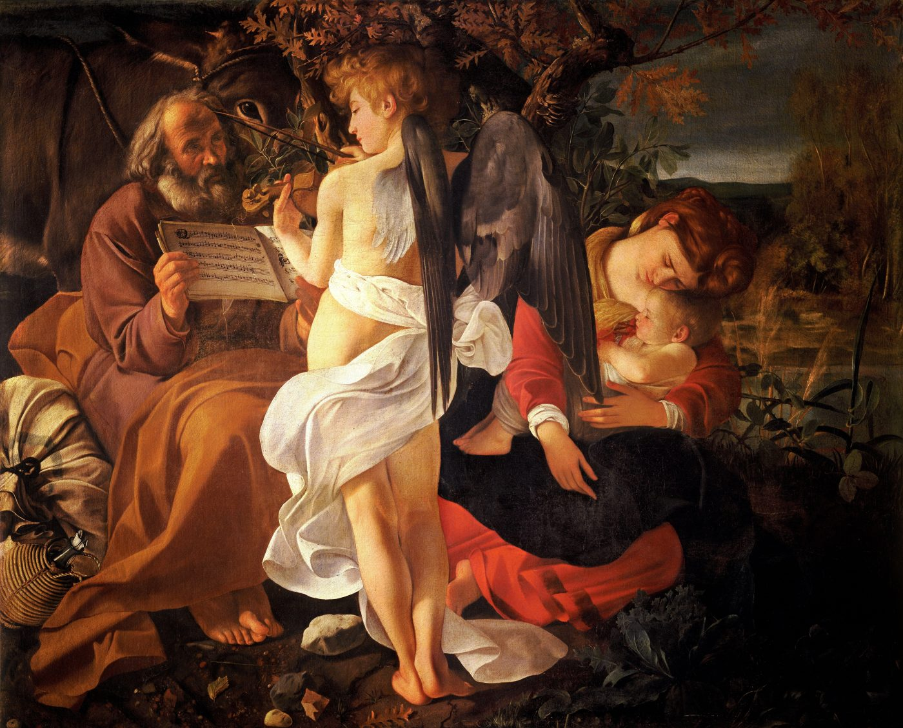
Караваджо, «Відпочинок на шляху до Єгипту», бл. 1597.
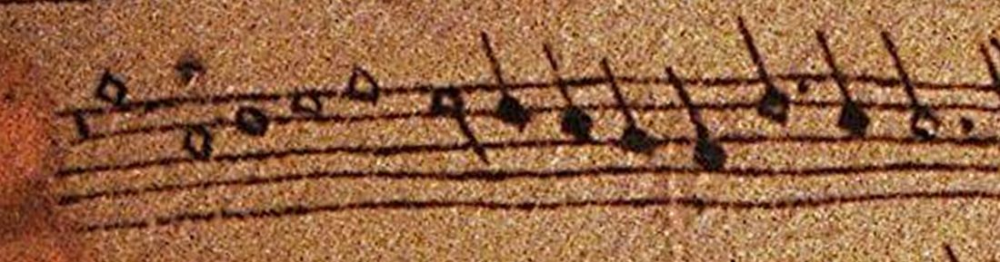
Четвертий рядок нотного зошита після вирівнювання, збільшено вчетверо.
Читання
Сторінка: мотет проти другого голосу
Рядки, де мотет перший сам
Стара програма без навчання
0,689 проти 0,460
1, 3, 4
Модель, без ритму
0,556 проти 0,303
2, 3, 5
Модель, з ритмом
0,787 проти 0,380
2, 3, 4, 5
Модель, ноти перемішано
мотет 151-й
—
Застереження. Вигляд штучних рядків я підбирав, дивлячись на цю картину, тож це не сліпий тест моделі.
Ван Утрехт, «Бенкетний натюрморт», 1644
контроль
Рейксмузей, SK-C-301. Розгорнута басова книга. Ліву сторінку встановив Джованні Паоло Ді Стефано (2023): бас шансону Томаса Крекійона «Pour ung plaisir». Ми прочитали рядки наосліп, не знаючи цієї відповіді для лівої сторінки. Між лінійками на знімку лише 6 точок.
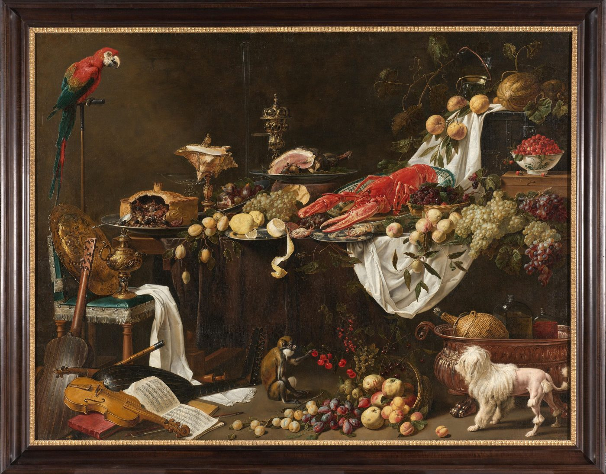
Адріан ван Утрехт, «Бенкетний натюрморт з папугою, собакою і мавпою», 1644.
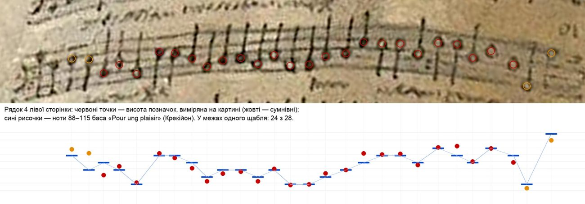
Четвертий рядок: позначки, прочитані наосліп, і ноти голосу Крекійона на знайденому місці.
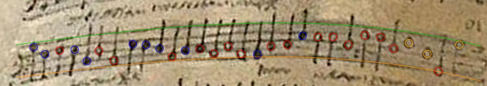
Той самий рядок: лінійки (зелена і помаранчева) і ноти знайшла модель без людини.
Читання
Сторінка 1→2→3→4: Крекійон проти другого
Рядки, де він перший сам
Оком, наосліп
0,541 проти 0,390 (серед 936 відібраних)
1+2 разом, 4, 5
Модель, лінійки задано оком (план записано до запуску)
0,678 проти 0,379
усі п'ять
Модель, лінійки теж від моделі
0,609 проти 0,338
2, 4, 5
Ноти перемішано
Крекійон 10-й, оцінка 0,13
—
Рядки 1–4 лягають на ноти 2–112 зі 116 у голосі, по порядку; п'ятий повторює кінець. Права сторінка (Клеменс, «Mais languiray je») не прочиталася: там 3–4,6 точки між лінійками і сильна перспектива.
Нові знахідки
Тут твір раніше не називали, наскільки ми змогли знайти. В обох випадках першу підказку дали слова на аркуші, а ноти перевіряли її окремо.
Анонім, «Aria Allegretto», XVIII століття
нове, перевірити
Невідомий німецький художник, олія, 114,5 × 167 см; продавалася на аукціоні Van Ham як «„Aria Allegretto“. Vornehme Dame am Cembalo» (Вікідані Q19931252). Назву дали за заголовком аркуша; твору не вказано.
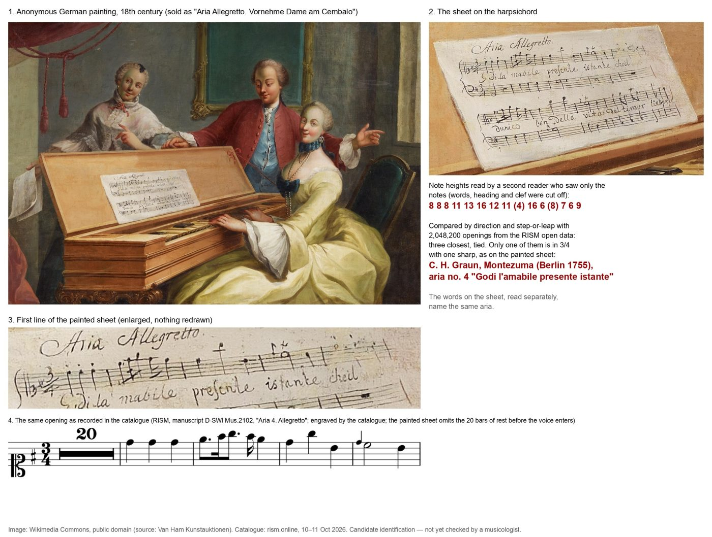
Картина, аркуш, перший рядок і той самий початок у записі каталогу.
Слова. «Godi l'amabile presente istante…». Пошук у RISM за словами дав 9 записів, усі одна арія: Карл Гайнріх Ґраун, опера «Монтесума» (Берлін, 1755), GraunWV B:I:29/12. У рукописах вона має заголовок «Aria 4. Allegretto», сопрановий ключ, один дієз і розмір 3/4, як на картині.
Ноти. Модель прочитала перший рядок сама. Серед 2 048 200 початків найвищу оцінку (0,84) мають три твори: арія Ґрауна, пісня Кноха (XIX ст.) і «Alleluia» Казалі. Розмір 3/4, написаний на аркуші, лишає тільки Ґрауна: у Кноха 6/8, у Казалі 2/4. Перемішані ноти дають не більше 0,79, і арії серед найкращих немає.
Що це дає картині. Вона не раніша за 1755 рік і походить із середовища, де ходили списки берлінських оперних арій.
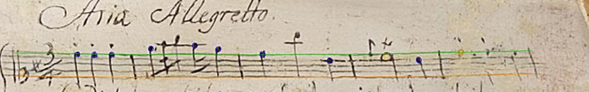
Перший рядок аркуша: лінійки і ноти, знайдені моделлю. Дрібні ноти з ребрами вона ще пропускає.
Застереження. Перший пошук я зробив на вирізці не того масштабу: модель прочитала ключ і розмір як ноти, і арія була 579-ю. Повторний пошук зроблено на вирізці, під яку написано інструмент; параметри не змінювалися. Опис лоту Van Ham ми не бачили, тому не знаємо, чи аукціон уже називав Ґрауна. Музикознавець арію ще не дивився.
Ла Ір, «Алегорія музики», 1649
нове: слова
Метрополітен-музей описує ноти як «вокальну вправу і пісню на два голоси». Ми прочитали 84 ноти правої сторінки наосліп: два голоси по 42 ноти, кожен поділено подвійною рискою на 21 + 21.
Пошук за нотами нічого не дав, і причина зрозуміла: французьких пісень цього кола в базах майже немає.
Слова. Під першим рядком читається «C'est a ce coup qu'il faut pre(n)dre…». Так починається застільна пісня Етьєна Мульньє з його четвертої книги пісень із табулатурою для лютні (Париж, Баллар, 1633). На лівій сторінці картини якраз табулатура для лютні.
Ноти з друком не збігаються. Мелодію друку 1633 року (відкритий скан Королівської бібліотеки Бельгії) порівняно з намальованою: перемішані ноти лягають так само добре в 6,5–50 % спроб. У друці один голос і розмір C, на картині два голоси і розмір «3».
Але намальована музика справжня. Верхній голос займає рівно по вісім тактів у кожній частині. У другій частині 18 з 19 нот, що звучать разом, утворюють консонанс; з перемішаним нижнім голосом так виходить у 3 % спроб.
Сусідня частина картини. Музей Маньєн (Діжон), де зберігаються два янголи з цієї ж композиції, пише, що ноти в руках янгола — застільна пісня Філіппо про перемогу Вакха над коханням. У збірці Філіппо 1645 року нашого тексту немає; там є інша пісня, «Ha! que ta bonté me réveille… je dis fy de Silvie», яка підходить під опис музею. Імовірно, це дві різні пісні.
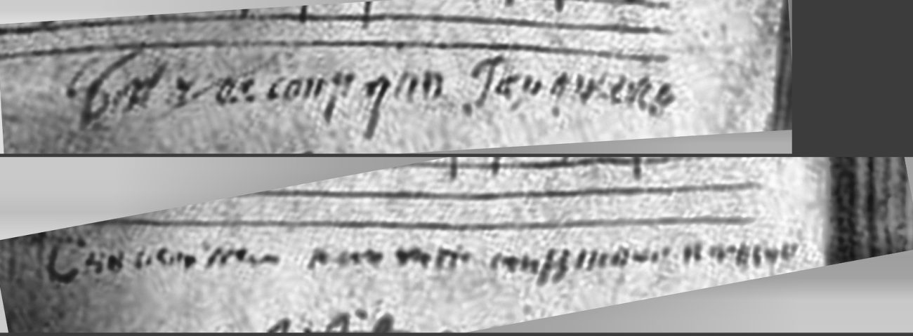
Слова під першими рядками обох голосів на картині, контраст підсилено.
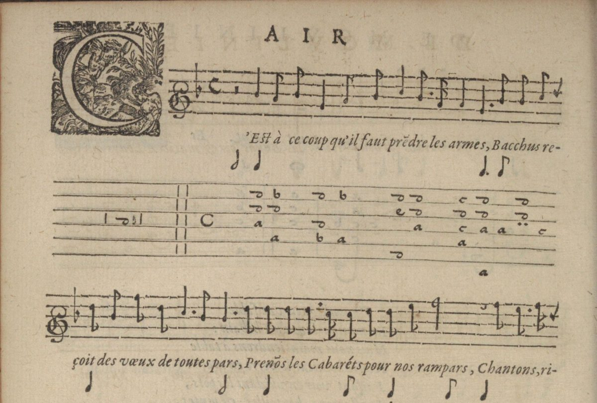
Мульньє, «C'est à ce coup qu'il faut prendre les armes», 1633, арк. 25 зв. Королівська бібліотека Бельгії, Fétis 2.382 A (CC0).
Послухати. Намальована пісня, зіграна з нашого читання (53 с, форма A A B).
Це одна з можливих реконструкцій: ключі, відсутність знаків при ключі і кінцеві ноти частин вибрано нами. Не видання і не доказ.
Підсумок: слова встановлено, мелодії в доступних виданнях немає. Можливо, картина — єдине місце, де цей наспів записано.
Де не вийшло
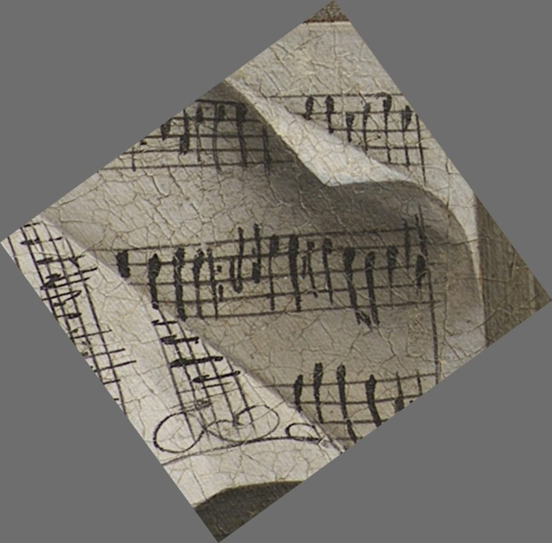
Гейсбрехтс, 1672: найдетальніший знімок з усіх, але ноти намальовано рівними штрихами без голівок. Висоти не прочитати.
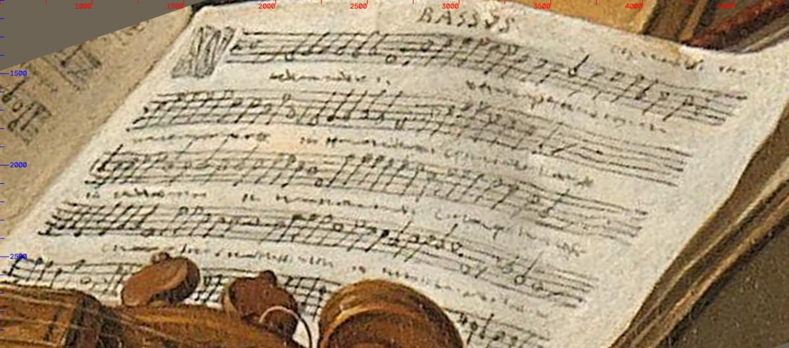
Права сторінка Ван Утрехта: 3–4,6 точки між лінійками і перспектива. Модель знаходить лише уривки станів.
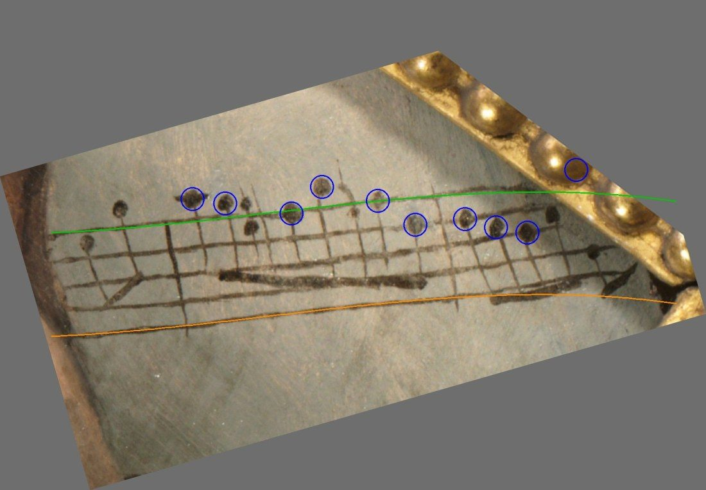
Аппіані, портрет музиканта (Клівленд). Початок мелодії закритий пальцем, видно продовження. Модель знайшла 10 голівок приблизно з 16 і, схоже, поставила нижню лінійку на одну нижче. Передано Codex для пошуку в базі творів 1750–1810 років.
Гондекутер, «Пташиний концерт», 1670. Читання і план зафіксовано, три варіанти пошуку дали різних випадкових переможців. Не знайдено.
Межі методу
Роздільність. Потрібно щонайменше 5–6 точок між лінійками в музейному знімку. При 6 точках модель ще розрізняє порожні й зафарбовані голівки.
Бази. Метод знаходить лише те, що є в базі. У PDMX мало старої французької пісні; RISM зберігає тільки початки творів.
Художник. Якщо ноти намальовано як орнамент, читати нічого.
Контрольні картини не сліпі для моделі, крім Ван Утрехта: на Караваджо і Ла Ірі я підбирав вигляд штучних рядків.
Модель помиляється. Вона приймає кінці штилів за голівки і плутає ключ із нотами. Пошук із допуском це витримує, але чистого нотного запису модель ще не дає.
Нових визначень лише за нотами, без жодної підказки, у нас поки немає. Обидві нові знахідки почалися зі слів.
Що варто перевірити людині
Ґраун. Опис лоту Van Ham: чи аукціон уже називав твір. Погляд музикознавця на перший рядок арії.
Ла Ір. Каталог П. Розенберга і Ж. Тюїльє (1988) і стаття Габріеле Фрінгс у Gazette des Beaux-Arts (1994): чи пісню вже пов'язували з Мульньє. Чи відоме інше покладення слів «C'est à ce coup qu'il faut prendre les armes».
Аппіані. Перевірка голівок і лінійок оком, пошук у базі творів 1750–1810 років.